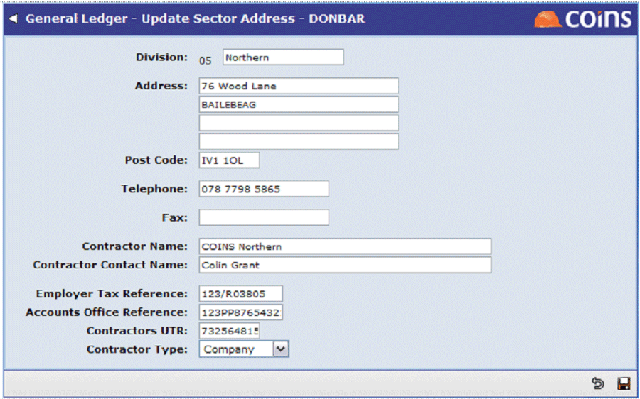

More Than One Scheme in a
If you have different sectors that are part of different CIS schemes set up within a , use Sector Details Maintenance (in General Ledger) to enter the contractor's details; these override the settings in the parameters, so payments from these sectors will take the contractor's details from Sector Details Maintenance.
If you have more than one sector that represent a single registration with HMRC, set up identical details in Sector Details Maintenance for each of these sectors.

If the first line of the address is non-blank, the address lines, , telephone and fax numbers will override the parameter values. All others fields will override the corresponding parameter values unless they are set to 'default'.
(The sector address that refers to for a given payment is from the that the payment is made in, but any parameter values are taken from the main (submission) if the is linked.)